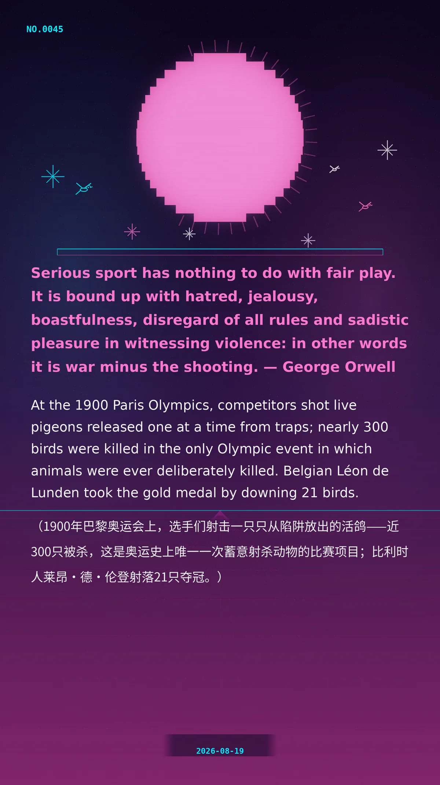

Serious sport has nothing to do with fair play. It is bound up with hatred, jealousy, boastfulness, disregard of all rules and sadistic pleasure in witnessing violence: in other words it is war minus the shooting. — George Orwell
At the 1900 Paris Olympics, competitors shot live pigeons released one at a time from traps; nearly 300 birds were killed in the only Olympic event in which animals were ever deliberately killed. Belgian Léon de Lunden took the gold medal by downing 21 birds. （1900年巴黎奥运会上，选手们射击一只只从陷阱放出的活鸽——近300只被杀，这是奥运史上唯一一次蓄意射杀动物的比赛项目；比利时人莱昂·德·伦登射落21只夺冠。）